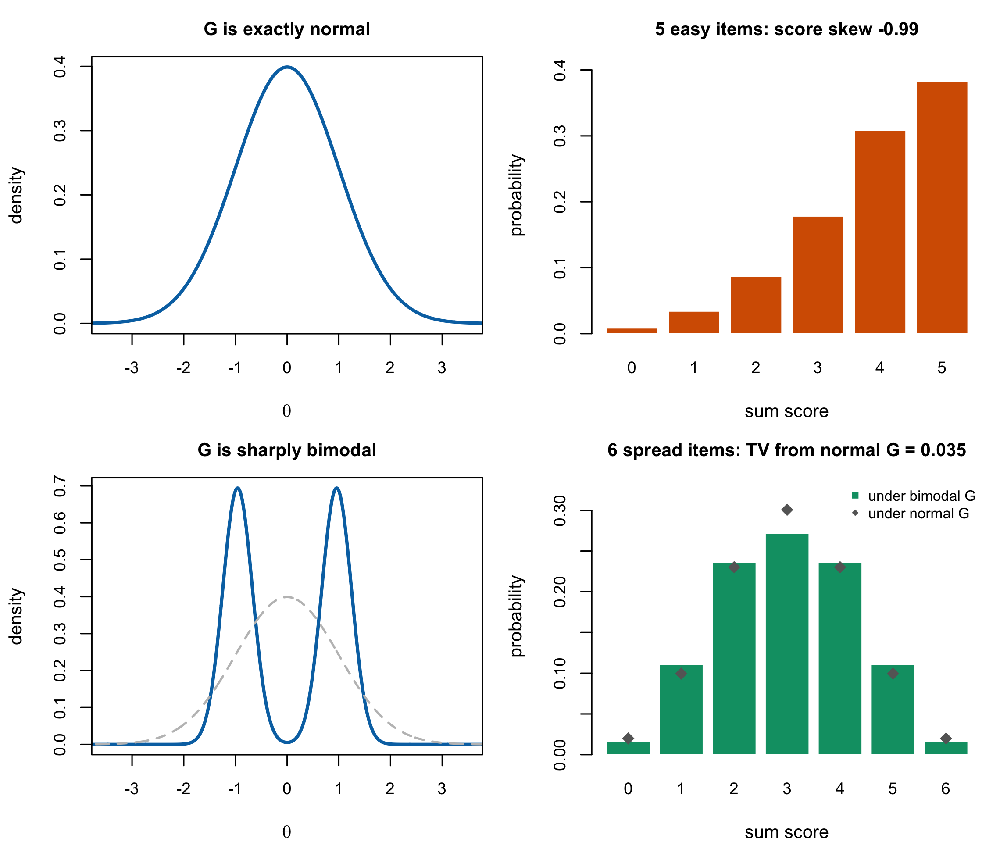

13 Non-Normality in Latent Traits
Part V asks what happens when \(G\) is not normal, and the first question is whether that is a real case or a hypothetical one. The literature has a stock answer — normality is empirically rare, and Micceri (1989) is the citation — and the answer is right for the wrong reason.
This chapter separates two claims that are routinely run together. That observed score distributions in psychology and education are usually not normal is well established and this chapter accepts it. That this constitutes evidence about the latent trait distribution does not follow, and Proposition 13.1 shows it does not follow in either direction: a sum score can be markedly skewed when \(G\) is exactly normal, and can be symmetric and bell-shaped when \(G\) is sharply bimodal.
The consequence is not that normality is safe. It is that the evidence for doubting it has to come from somewhere else, and Section 13.3 says where.
13.1 What Micceri actually examined
Micceri (1989) surveyed 440 large-sample achievement and psychometric measures and found all of them significantly non-normal at \(\alpha = .01\). He catalogued several classes of departure: tail weights ranging from uniform to double exponential, exponential-level asymmetry, severe digit preferences, multimodalities, and modes lying outside the interval between the mean and the median.
Two modern replications reach the same place with different corpora. Blanca et al. (2013) examine 693 distributions at sample sizes of 10 to 30 and report skewness from \(-2.49\) to \(2.33\) and kurtosis from \(-1.92\) to \(7.41\), with only 5.5% close to the values normality would give. Cain et al. (2017) collect 1,567 univariate and 254 multivariate distributions from authors publishing in Psychological Science and the American Educational Research Journal, and find 74% and 68% respectively departing from normality.
None of this is in dispute here, and none of it is about latent traits.
Micceri is explicit about what he is studying. He describes his measures as “discrete, bounded” and notes that they “consist of a number of discrete data points”; his catalogue of digit preferences is a catalogue of response artefacts. The paper is a survey of observed distributions, it says so, and it is correct. What it acquired over three decades of citation is a second reading — as evidence that latent variables are non-normal — and that reading is the field’s, not his.
13.2 The sum-score fallacy
Under the Rasch model a person’s sum score is \(X_p = \sum_i U_{pi}\), which conditional on \(\theta_p\) is a sum of independent non-identical Bernoulli variables: a Poisson-binomial with parameters \(\pi_{pi} = \operatorname{logit}^{-1}(\theta_p - \beta_i)\). Its marginal distribution is therefore
\[ \Pr(X = k) = \int \Pr(X = k \mid \theta)\, g(\theta)\, d\theta , \tag{13.1}\]
a mixture of Poisson-binomials over \(G\). Three features of Equation 13.1 make it a poor window onto \(g\). It is bounded on \(\{0,\dots,I\}\) whatever \(G\) does. It is discretized to \(I+1\) points. And it is convolved with conditional response noise whose variance \(\sum_i \pi_{pi}(1-\pi_{pi})\) is largest exactly where \(\pi \approx 1/2\).
Proposition 13.1 The sum-score distribution does not diagnose the latent distribution in either direction. Specific counterexamples computed here
Under the Rasch model:
There are designs with \(G\) exactly normal whose sum-score distribution is markedly skewed. With \(G = N(0,1)\) and five items of difficulty \(-1.5\), Equation 13.1 has skewness \(-0.987\) and places \(38.3\%\) of the population at the maximum score.
There are designs with \(G\) sharply bimodal whose sum-score distribution is symmetric and single-peaked. With \(G\) an equal mixture of normals at \(\pm 1\) with standard deviation \(0.30\), standardized, and six items spread evenly over \([-2.5, 2.5]\), Equation 13.1 is \((0.017, 0.111, 0.237, 0.272, 0.237, 0.111, 0.017)\) — unimodal, exactly symmetric, and within 0.035 in total variation of the sum-score distribution the same test produces under a standard normal \(G\).
Consequently non-normality of the sum score is neither necessary nor sufficient for non-normality of \(G\).
Proof. Both statements are exhibited by an exact Poisson-binomial recursion for \(\Pr(X = k \mid \theta)\) followed by fixed-grid numerical quadrature over \(G\) on \([-12,12]\) with 4,001 points, in code/R/09-figures.R and independently re-evaluated in code/R/15-derivation-checks.R. The printed probabilities are numerical values, not symbolic identities. ∎
Figure 13.1 shows both. The lower right panel is the one to sit with: two latent distributions as different as a standard normal and a pair of sharp spikes at \(\pm 1\) produce score distributions whose cells differ by at most a few percentage points, and both are almost indistinguishable from a symmetric binomial.

13.2.1 How much a test can reveal, quantitatively
The \(0.035\) in (b) is not a fixed penalty. It is a property of the test, and it grows as the test lengthens. For difficulties spread over \([-2.5,2.5]\) or \([-1.6,1.6]\), the total variation between the sum-score distributions induced by a standard normal \(G\) and by the bimodal \(G\) above is
| items | 6 | 9 | 20 | 60 |
|---|---|---|---|---|
| total variation | 0.035 | 0.066 | 0.172 | 0.305 |
For this particular pair of distributions and item design, separation is weak at six items and larger at sixty. These TV values are not a power calculation: detectability also depends on the multinomial cells, fitted nuisance parameters, test statistic and sample size. The general conclusion is therefore narrower: the score distribution’s capacity to separate specified alternatives is a design property, and a short test can be weak for some materially different latent shapes.
That statement has a corollary worth naming, because it cuts against this book’s own interest. If a short test cannot reveal the shape of \(G\), then a short test also cannot easily be hurt by getting the shape wrong, at least in what it says about scores. The place where the shape matters is precisely where the data can see it, and Section 13.4 takes that up.
13.2.2 This does not undercut the careful version
Li and Cai (2018) use the summed score to test latent-distribution fit, and Proposition 13.1 is not an objection to their work. The difference is what the observed score distribution is compared against. Reading a score histogram and judging whether it looks normal compares it against a normal shape, which Proposition 13.1 shows is the wrong comparison. Li and Cai compare the observed summed-score distribution against the model-implied one — Equation 13.1 evaluated under the fitted model — so the conditional binomial noise, the item parameters and the boundedness are all already inside the reference. Their statistics are, in their words, focused: powerful against latent distributional violations and correctly insensitive to multidimensionality, and they report that the limited-information index \(M_2\) has considerably lower power against latent non-normality than the summed-score indices do.
Proposition 13.1 is a statement about the naive procedure, and an explanation of why the careful one has to be as elaborate as it is.
13.3 Where the latent-level evidence actually comes from
Three routes remain once the sum-score route is closed.
Fitting a flexible \(G\) and looking at it. Empirical histogram, spline, Ramsay-curve and Davidian-curve estimation all recover a \(G\) from the responses rather than from the scores, and a recovered \(G\) that departs from normality is direct evidence. This is the literature of Chapter 14, and the caution attached to it is that a flexible estimator will find structure in noise if allowed to, so the evidence is only as good as the regularization. This route has now been walked at corpus scale: the Warehouse study of this programme refits 504 real datasets under a normal and a flexible calibration that differ in nothing else, finds the median flexible estimate sitting .109 from its normal twin in cumulative probability with a majority of datasets beyond .10, and — the part that answers the caution — checks its estimator dependence directly, with two flexible estimators agreeing on the .10 landmark for about seven in eight datasets (Lee 2026). The departures are real, they are common, and they are overwhelmingly skew rather than multimodality; Chapter 28 reports the study with its design and its floor conditions attached.
Testing distributional fit directly. Li and Cai’s (2018) summed-score likelihood indices, with their Satorra–Bentler moment adjustment, are the current form of this. They test the latent distribution specifically rather than overall model fit, which is what makes them evidence about \(G\) rather than about the model as a whole.
Substantive argument. The strongest reasons to expect non-normality are not statistical at all, and Li and Cai (2018, sec. 1) set out two, following Woods (2006). Severe symptoms of psychological disorders are rare in the general population and most people sit at low levels, so a symptom trait should be positively skewed — the skew is a fact about prevalence, not about measurement. And when a sample combines two or more subpopulations with different means, calibrating items against the combined population makes normality suspect and multimodality likely. To these the design literature adds floor and ceiling effects and explicit selection, both of which truncate rather than deform.
Note what these arguments have in common: each names a mechanism in the world that would produce a particular departure. That is a different kind of evidence from a histogram, and a better one, because it predicts the shape rather than merely rejecting a null.
13.4 Consequences by inferential goal
Reviewer 1 asked what relaxing normality buys. The answer this book gives is that it depends entirely on what is being estimated, and the three predictions below are stated as predictions — they are the mechanism, and the companion simulation is what tests them.
Individual estimates: modestly affected. A misspecified \(G\) changes \(\mu_\theta\) and \(\sigma^2_\theta\), hence the shrinkage weight of Equation 11.3, hence each posterior mean. But the damage is bounded by how much weight the prior carries: at \(w_p\) near 1 the prior is nearly irrelevant, and at \(w_p\) near 0 every estimate is near \(\mu_\theta\) whether or not the shape is right. The prediction is a modest effect, largest at middling reliability.
The recovered distribution: severely affected. This is where the whole loss falls. Under the constant-error Gaussian working model, Proposition 11.1 already showed that even a correctly specified normal \(G\) yields an ensemble whose spread is \(\sqrt{\bar w}\) of the truth; a misspecified shape adds a systematic distortion on top, and it distorts in the direction of the assumed shape — a normal prior pulls a bimodal truth toward unimodality. Any functional of the recovered distribution inherits this: quantiles, the proportion beyond a cut-score, the estimated spread.
Ranks: a separate, conditional question. A monotone transformation preserves order, and Section 12.3.2 shows that fixed-item Rasch posteriors are stochastically ordered by total score even though information is non-constant. Misspecifying \(G\) can still change rank uncertainty, posterior expected-rank values and results under heterogeneous forms or shared item uncertainty, but differential local shrinkage alone is not a proof of person reordering. Which residual rank target is sensitive to the shape of \(G\) is therefore an empirical prediction for the companion study, not a theorem of this chapter.
Two of the three have published support, in a neighbouring model. Paddock et al. (2006, sec. 6) report exactly this pattern for triple-goal estimates in the two-stage Gaussian model: “the data-analytic choice for \(G\) mattered relatively little when using GR for estimating and ranking the \(\theta\)s, but GR estimates of the EDF and percentiles of \(G\) were very sensitive to model departures from the true distribution.” Their rank finding is stronger than the prediction above — the rank losses of ML, posterior mean and triple-goal estimates were “very similar and indistinguishable, even when the variances of the observations are heterogeneous” (2006, sec. 4.2.2.2).
They also find the effect is reliability-dependent in this programme’s sense: “when the data are quite informative, the GR estimates are quite robust to model misspecification… However, conclusions can be quite sensitive to misspecification of the population distribution when the data are less informative.”
Two qualifications keep this evidence rather than proof. Their sampling model is Gaussian with known unit variances, not a Rasch model whose information varies with \(\theta\) in the way Section 7.1 describes; and their estimator is the triple-goal one of Chapter 19, not the posterior mean. The predictions above therefore remain what the companion book tests, with a strong prior on how the test comes out.
These three together are the reason Part VI is organized by goal rather than by estimator. If the consequences of a modelling choice differ this much across goals, then an evaluation that reports one number has answered one question and left the others open.
The predictions are no longer only predictions. The companion simulation has since returned a verdict on each — direction confirmed for all three, the distribution effect where the mechanism put it, the individual effect with a quantified exception region, the rank question resolved to near-flatness — and Chapter 27 reads the record back into this chapter’s terms, under the labelling rules stated there.
13.5 Sources and provenance
Micceri (1989) is read directly: the count of 440 measures, the \(\alpha = .01\) result, the catalogue of contamination classes, and his own description of the measures as discrete and bounded are all from his abstract and introduction. The reading of his paper as evidence about observed rather than latent distributions is a statement about what the paper says, not a criticism of it; the misreading belongs to the citing literature.
Blanca et al. (2013) and Cain et al. (2017) are read at the level of their reported counts and percentages, which is all that is used.
The structural observation behind Proposition 13.1 — that observed score shape depends jointly on \(G\), the item parameters and conditional response noise — is established in the IRT fit literature and is not claimed here. What is computed here is the particular pair of counterexamples and the accompanying TV table: exact Poisson-binomial recursion followed by fixed-grid quadrature, not simulation. The targeted search did not locate these same two numerical constructions, but no priority claim is made.
Li and Cai (2018) are read for their procedure, their focused-power result, the \(M_2\) comparison, and their § 1 summary of Woods’s (2006) substantive arguments; Woods (2006) is held but was not read for this chapter and is cited through Li and Cai under R5.
The three goal-specific predictions in Section 13.4 are this book’s, follow from Equation 11.3 and Proposition 11.1, and are labelled predictions rather than findings because the evidence for them is the companion simulation’s, not this book’s; Chapter 27 now carries that evidence, and the closing paragraph of Section 13.4 points to it without importing it. The corpus prevalence and estimator-agreement figures in Section 13.3 are the Warehouse shape study’s (2026), read from its manuscript and its corrected released frame as described in Chapter 28.